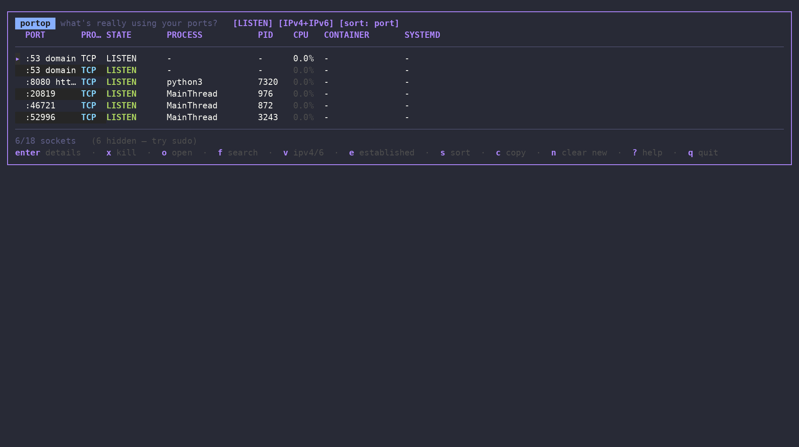

Why portop
The everyday basics of seeing what's on your ports — done once, done well, with the context ss and lsof leave out.
●Live, color-coded table
LISTEN, ESTABLISHED and transient states colored at a glance, with per-process CPU% sampled like top.
✕Kill, safely
k then confirm — graceful SIGTERM or forced SIGKILL. Never a stray keypress away.
{}systemd & Docker aware
Every row shows the owning .service unit and Docker container, resolved from cgroups — no extra daemons.
●New-port alerts
Freshly opened listening ports are highlighted live, with an optional desktop notification.
±Baseline drift detection
--save-baseline then --diff from a cron job — exit code 3 the moment something unexpected starts listening.
◆Themes & remappable keys
4 built-in themes, every one of 17 actions rebindable via config.yml — no restart needed.
Beyond wrapping ss and lsof
Neither tells you this on its own — portop does, from the same dashboard.
Save a snapshot of what's listening, then diff against it later — from a cron job or systemd timer. Exit code 3 the instant a port you didn't expect shows up.
systemd unit and Docker container, resolved straight from the process's cgroup — no D-Bus, no Docker SDK, no daemon of its own.
Can't resolve a row owned by root (docker-proxy, systemd-resolved)? portop tells you exactly why and that sudo would fix it, instead of a silent blank.
Columns drop themselves — least useful first — as the terminal narrows, so rows never wrap into a mess. Works down to 80 columns.
Parsed straight from /etc/services: :22 shows as ssh, :443 as https, right in the table.
A clean JSON snapshot for piping into jq, a dashboard, or your own monitoring — same data the TUI shows, no scraping.
In action

Filtering to a port, checking who owns it, and the confirm-before-kill flow — a real recorded session, not staged.
Installation
Linux only — portop reads /proc/net directly, which doesn't exist on macOS or Windows.
# detects arch, verifies the release checksum
curl -fsSL https://raw.githubusercontent.com/padovanl/portop/main/install.sh | sh
# replace <version> with the latest release number, no leading "v"
curl -fLO https://github.com/padovanl/portop/releases/latest/download/portop_<version>_linux_amd64.deb
sudo dpkg -i portop_<version>_linux_amd64.deb
curl -fLO https://github.com/padovanl/portop/releases/latest/download/portop_<version>_linux_amd64.tar.gz tar -xzf portop_<version>_linux_amd64.tar.gz sudo install -m 755 portop /usr/local/bin/portop
go install github.com/padovanl/portop/cmd/portop@latest
arm64 builds and checksums on the releases page.
Every key, one dashboard
The complete keybinding reference — also in-app any time with ?, and fully remappable via config.yml.
| Key | Action |
|---|---|
| ↑ / ↓ | Move the cursor |
| g / G | Jump to top / bottom |
| enter | Process details — cmdline, exe, cwd, user, RSS, start time |
| k | Kill process, then y=SIGTERM or f=SIGKILL |
| o | Open http(s)://localhost:PORT in the browser |
| f / / | Filter/search by port, process or PID |
| v | Toggle IPv4 / IPv6 / both |
| e | Show/hide ESTABLISHED connections |
| s | Cycle sort column |
| c | Copy selected row to clipboard |
| n | Clear the new-port highlight |
| r | Refresh now |
| ? | Help |
| q | Quit |